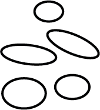

Digital Cairn
Build a modern digital Cairn
I became fascinated by their posture, and presence while hiking in the White Mountains of New Hampshire with some close friends. We spent three days exploring the trails and mountainside, guided by the noble assortment of stacked pebbles and rocks.
/kern/, noun
A mound of rough stones built as a memorial or landmark, typically on a hilltop or skyline.
Google Dictionary
with you here, and give you the chance to take part in this tradition today our digital age.

(Currently only on desktop)